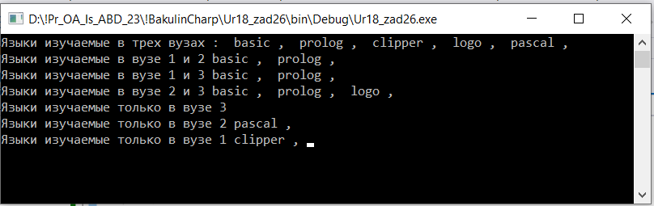

using System;
using System.Collections.Generic;
//В каждом из 3-х вузов может изучаться множество языков
//программирования: basic, pascal, prolog, clipper, cu, logo.
//Ввести с клавиатуры множество языков, изучаемых в каждом из вузов.
//Построить множество В, содержащее названия языков, изучаемых только в одном из 3-х вузов.
namespace Ur18_zad26
{
internal class Program
{
static void Main(string[] args)
{
HashSet L = new HashSet(); //все изучаемые языки
L.Add("basic");
L.Add("pascal");
L.Add("prolog");
L.Add("clipper");
L.Add("logo");
HashSet v1 = new HashSet(); //языки изучаемые в 1 вузе
v1.Add("basic");
v1.Add("prolog");
v1.Add("clipper");
HashSet v2 = new HashSet(); //языки изучаемые в 2 вузе
v2.Add("basic");
v2.Add("prolog");
v2.Add("logo");
v2.Add("pascal");
HashSet v3 = new HashSet(); //языки изучаемые в 3 вузе
v3.Add("logo");
v3.Add("prolog");
v3.Add("basic");
//ожидаемый результат язык pascal изучается только в одном вузе v2
//используем метод пересечения
//найти все языки изучаемые в 3 вузах
HashSet K1 = new HashSet(); //Языки изучаемые в вузе v1 и v2
HashSet K2 = new HashSet(); //Языки изучаемые в вузе v1 и v3
HashSet K3 = new HashSet(); //Языки изучаемые в вузе v2 и v3
HashSet R2 = new HashSet(); //Одинаковые языки изучаемые в трех вузах v1 и v2 и v3
HashSet R = new HashSet();//Языки изучаемые в трех вузах
R.UnionWith(v1);
R.UnionWith(v2);
R.UnionWith(v3);
Console.Write("Языки изучаемые в трех вузах : ");
foreach (string i in R)
{
Console.Write($" {i} , ");
}
Console.WriteLine();
//изучается только в одном вузе v1 v2
K1.UnionWith(v1);
K1.IntersectWith(v2);
Console.Write("Языки изучаемые в вузе 1 и 2");
foreach (string i in K1)
{
Console.Write($" {i} , ");
}
Console.WriteLine();
//изучается только в одном вузе v1 v3
K2.UnionWith(v1);
K2.IntersectWith(v3);
Console.Write("Языки изучаемые в вузе 1 и 3");
foreach (string i in K2)
{
Console.Write($" {i} , ");
}
//изучается только в одном вузе v1 v3
Console.WriteLine();
K3.UnionWith(v2);
K3.IntersectWith(v3);
Console.Write("Языки изучаемые в вузе 2 и 3");
foreach (string i in K3)
{
Console.Write($" {i} , ");
}
Console.WriteLine();
//Языки изучаемые в только в одном вузе v3
R2.UnionWith(R); //Языки изучаемые в трех вузах
R2.ExceptWith(v1); //Языки изучаемые только в вузе 1
R2.ExceptWith(v2); //Языки изучаемые только в вузе 2
Console.Write("Языки изучаемые только в вузе 3");
foreach (string i in R2)
{
Console.Write($" {i} , ");
}
Console.WriteLine();
//Языки изучаемые в только в одном вузе v2
R2.UnionWith(R); //Языки изучаемые в трех вузах
R2.ExceptWith(v1); //Языки изучаемые только в вузе 1
R2.ExceptWith(v3); //Языки изучаемые только в вузе 3
Console.Write("Языки изучаемые только в вузе 2");
foreach (string i in R2)
{
Console.Write($" {i} , ");
}
Console.WriteLine();
//Языки изучаемые в только в одном вузе v1
R2.UnionWith(R); //Языки изучаемые в трех вузах
R2.ExceptWith(v2); //Языки изучаемые только в вузе 2
R2.ExceptWith(v3); //Языки изучаемые только в вузе 3
Console.Write("Языки изучаемые только в вузе 1");
foreach (string i in R2)
{
Console.Write($" {i} , ");
}
Console.ReadKey();
}
}
}

|